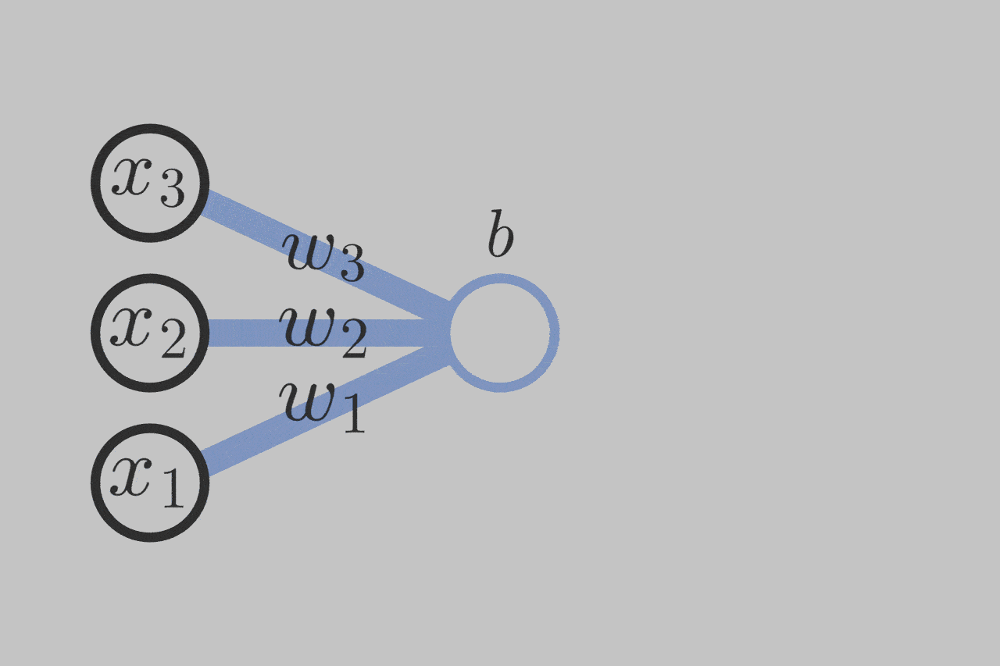
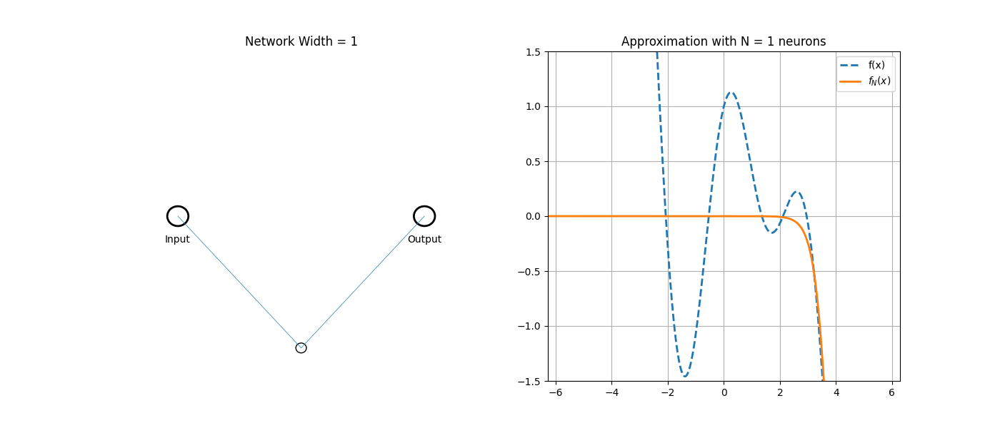
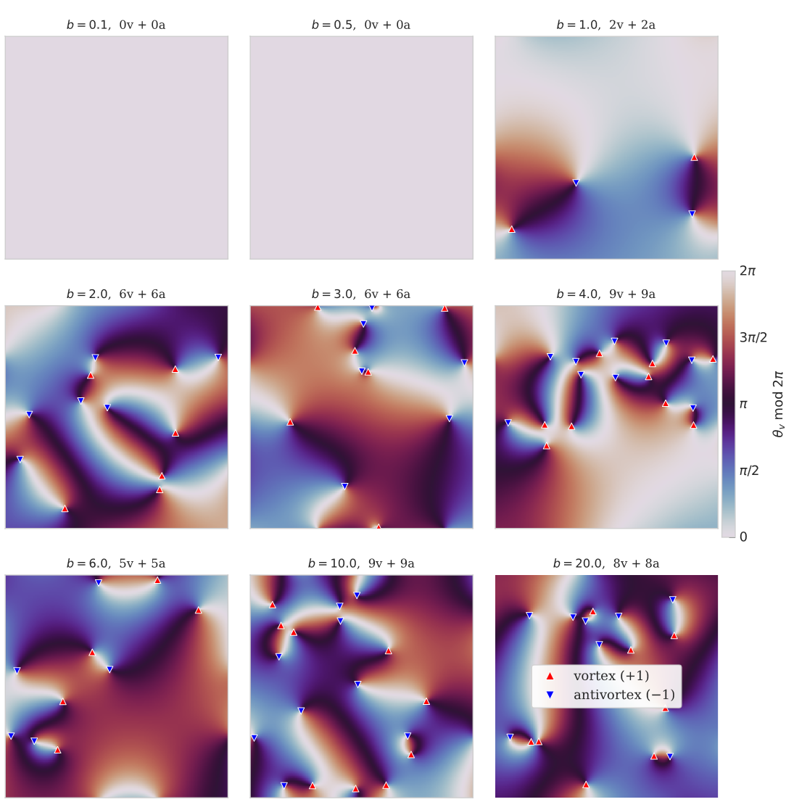

Benjamin Suzzoni
In collaboration with P. Capuozzo and B. Robinson
What do we call a Neural Network (NN)? How do they work?
Neural Network: a map \(f:\mathbb{R}^m\longrightarrow\mathbb{R}^n\)
Operations: composition, addition, scalar multiplication
Functional form of \(f\) is called an architecture
eg. Feed forward network

Initialization: pick parameters from a distribution \(\longrightarrow\) get a random function \(f\)
Eg. \(f(x) = \sigma(\sum_i^3 w_ix_i+b)\), $$ w_1,w_2,w_3 \sim P_w \qquad\qquad\qquad b \sim P_b $$
Many known architectures have a parameter \(N\) s.t. \(N\to\infty\) gives a Gaussian draw \(f\sim\mathcal{N}\).
eg. Feed forward, Convolution, Recurrent, Graph Convolution, etc
This is the Neural-Network-Gaussian-Process (NNGP) correspondence.
How well do NNs approximate functions?
Ingredients: activation functions/architecture, large-parameter limit
Universal Approximation Theorem: NNs are dense in a space of maps (in the \(N\to\infty\) limit)

Textbook method for describing a Quantum Field Theory: path integral
$$ \langle\mathcal{O}(x)\rangle = \int\mathcal{D}\phi\, e^{-S[\phi]}\,\mathcal{O}(x) $$
The measure \(\mathcal{D}\phi\) is generally not well defined.
\(\hookrightarrow\) it is a shorthand for integrate over all fields
We can define it
Key idea: use initialization distributions together with UATs to integrate over all possible neural-network configurations.
We recover the standard path integral in the UAT limit* (\(N\to\infty\)) $$ \int\mathcal{D}\phi\, e^{-S[\phi]}\,\mathcal{O}(\phi(x)) \qquad\longleftrightarrow\qquad \lim_{N\to\infty}\int_{\Omega}\prod_i^N d\theta_i P(\theta_i)\mathcal{O}(\phi_{\theta}(x))$$
* NNGP correspondence \(\rightarrow\) generalized free theory only
Key takeaway:
Can compute correlators in the usual way, using generating functional \(Z[J]\) $$ Z[J] = \lim_{N\to\infty}\int_{\Omega}\prod_i^N d\theta_i P(\theta_i)\,e^{\int dx\, J(x)\phi_{\theta}(x)} $$
but those are now standard statistical averages (\(\mathbb{E}\)), $$ K(x,y) = \langle\phi(x)\phi(y)\rangle \qquad\longleftrightarrow\qquad \frac{\delta^2 Z[J]}{\delta J(x)\delta J(y)} = \mathbb{E}_{P(\theta)}[\phi_{\theta}(x)\phi_{\theta}(y)] $$
We get a free scalar boson with propagator \(K\) $$ S[\phi] = -\frac{1}{2}\int dxdy\,\phi(x)K^{-1}(x,y)\phi(y) $$
\(\hookrightarrow\) one can choose \(P,\phi_{\theta}\) (hence \(K(x,y)\)) to engineer different QFTs
There are two ways of introducing interactions
eg. \(\phi^4\)-theory can be defined via a deformation of the distribution of parameters $$ P(\theta) \to P(\theta)\exp\left(-\frac{\lambda}{4!}\int dx\,\phi^4_{\theta}(x)\right) $$
NNFT: good playground for analytics but also strong numerical convergence!
\(\hookrightarrow\) good for simulations
| 1990s | R. M. Neal | NNGP | |
| . | |||
| 2008 | J.Halverson, A. Maiti, K. Stoner | Foundation of modern NNFT | |
| 2023 | M. Demirtas, J. Halverson, A. Maiti, M. D. Schwartz, K. Stoner | \(\phi^4\)-theory using NN; and action reconstruction | |
| 2024 | J. Halverson, J. Naskar, J. Tian | Extended the formalism to CFTs | |
| 2025 | S. Frank, J. Halverson, A. Maiti, F. Ruehle | Included fermions and supersymmetry | |
| 2025 | P. Capuozzo, B. Robinson, B. Suzzoni | Extended the formalism to dCFTs | |
| 2025 | B. Robinson | Virasoro symmetry using NN | |
| 2026 | S. Frank, J. Halverson | String Theory amplitudes | |
| 2026 | C. Ferko, J. Halverson, A. Mutchler | (scalar) NNFT are universal | |
| 2026 | C. Ferko, J. Halverson, V. Jejjala, B. Robinson | Topological effects (BKT and T-duality) | |
| 2026 | C. Ferko, S. Frank, J. Halverson, V. Jejjala | Anomalous Ward-Takahashi identities |
| 1990s | R. M. Neal | NNGP | |
| . | |||
| 2008 | J.Halverson, A. Maiti, K. Stoner | Foundation of modern NNFT | |
| 2023 | M. Demirtas, J. Halverson, A. Maiti, M. D. Schwartz, K. Stoner | \(\phi^4\)-theory using NN; and action reconstruction | |
| 2024 | J. Halverson, J. Naskar, J. Tian | Extended the formalism to CFTs | |
| 2025 | S. Frank, J. Halverson, A. Maiti, F. Ruehle | Included fermions and supersymmetry | |
| 2025 | P. Capuozzo, B. Robinson, B. Suzzoni | Extended the formalism to dCFTs | |
| 2025 | B. Robinson | Virasoro symmetry using NN | |
| 2026 | S. Frank, J. Halverson | String Theory amplitudes | |
| 2026 | C. Ferko, J. Halverson, A. Mutchler | (scalar) NNFT are universal | |
| 2026 | C. Ferko, J. Halverson, V. Jejjala, B. Robinson | Topological effects (BKT and T-duality) | |
| 2026 | C. Ferko, S. Frank, J. Halverson, V. Jejjala | Anomalous Ward-Takahashi identities |
General philosophy in NNFT: global symmetries of the action should appear as global symmetries of the parameter distribution.
Conformal symmetry in \(D\) dimensions \(\longrightarrow\) distribution of parameters with \(SO(D+2)\) isometry*.
* actually \(SO(1,D+1)\) but should consider Wick rotation for well-defined probability distribution.
NN architecture for conformal primary should obey $$ \phi_{\theta}(\lambda x) \longrightarrow \lambda^{-\Delta}\phi_{\theta}(x) $$ with \(x \in \mathbb{R}^{D+2}\) (i.e. embedding space)
eg. \(\phi_{\theta}(x) = (x\cdot\theta)^{-\Delta}\)
We have a NN with one node.
Architecture: $$\phi_{\theta}(x) = (x\cdot\theta)^{-\Delta}$$
Distribution: $$ P(\theta) = f(\theta\cdot\theta) $$
Compute correlators $$ Z[J] = \int_{\mathbb{R}^{D+2}}d\theta\,P(\theta)\, e^{\int dx\, J(x)\phi_{\theta}(x)} $$
One single NN node \(\longrightarrow\) UAT doesn't apply
\(\hookrightarrow\) don't expect a CFT
One single NN node \(\longrightarrow\) don't expect a CFT
Correlators obey crossing symmetry and have standard CFT structure!
eg. $$ \mathbb{E}[\phi_{\theta,\Delta_1}(x_1)\phi_{\theta,\Delta_2}(x_2)] = \delta_{\Delta_1,\Delta_2}\frac{c_{12}}{(x_1\cdot x_2)^{\Delta_1+\Delta_2}} $$
Choose architecture and distribution to get any CFT you want*.
Can combine NN nodes together to make new CFTs.
Formalism also works with conformal defects [Capuozzo, Robinson, Suzzoni; 2025].
What about CFTs in 2d?
Neural-Networks can approximate any function in the \(\infty\)-width limit.
The generating functional of correlators can be approximated too:
\[ Z[J] = \int \mathcal{D}\phi\, e^{-S[\phi] + \int d^Dx\, \phi(x)J(x)} \]
\[ Z[J]=\lim_{N\rightarrow\infty} \int_{\Omega} \prod_i^N d\theta_i\, P(\theta_i)\, e^{\int d^Dx\,\phi(x|\theta_i)J(x)} \]
Distribution \(P(\theta_i)\) usually has global symmetries of the action \(S[\phi]\).
Full Virasoro symmetry achieved in the limit\({}^\ast\) using cos-net architecture and log-kernel [Robinson; 2025], [Frank and Halverson; 2026],
\[ \phi(z|\{a_i,W_i,\gamma_i\}) = \frac{1}{N}\sum_{i=1}^N a_i\cos(zW_i+\bar{z}\overline{W}_i + \gamma_i) \]
\[ \mathbb{E}_{a_iW_i,\gamma_i}[\phi(z|\{a_i,W_i,\gamma_i\})\phi(w|\{a_i,W_i,\gamma_i\})] \overset{N\to\infty}{\longrightarrow} -\alpha^\prime\ln(|z-w) \]
Key idea: Finite-\(N\) corrections are deformations away from the free boson theory.
String theory with group manifold target space: \(S^2\rightarrow G\).
$$ S = \frac{1}{4\lambda^2}\int_{S^2} \operatorname{tr}\left(g^{-1}\partial_{\mu}gg^{-1}\partial^{\mu}g\right) - \frac{ik}{2\pi}\int_{B_3}\operatorname{tr}\left(g^{-1}dg\wedge g^{-1}dg\wedge g^{-1}dg\right) $$
The quantum theory unearths the affine Kac-Moody algebra \(\widehat{\mathfrak{g}}_k\) as its spectrum-generating algebra.
With \(J(z)=-k\partial gg^{-1}\), $$ J^a(z)J^b(z) \sim \frac{k\delta^{ab}}{(z-w)^2} + \frac{if^{ab}{}_cJ^c(w)}{z-w} $$ and \(T(z) = \gamma:J^aJ^a:(z)\), $$ T(z)T(w) \sim \frac{c/2}{(z-w)^4} + \frac{2T(w)}{(z-w)^2} + \frac{\partial T(w)}{z-w} $$
Use the Wakimoto representation: \(\beta\gamma\)-ghosts and free boson \(\phi(z)\).
Approximate those using the cos-net architecture.
Result: limit is well behaved and neural-network approximation is numerically powerful!
eg. \(\widehat{\mathfrak{su}(2)}_k\) has three base fields
\[ \begin{align} e(z) &= \beta(z)\\ h(z) &= i\sqrt{2k+4}\partial\phi(z)+2\gamma(z)\beta(z)\\ f(z) &= -i\sqrt{2k+4}\partial\phi(z)\gamma(z)-k\partial\gamma(z)-\beta(z)\gamma^2(z) \end{align} \] \[ T(z) = \frac{1}{2k+4}\left(\frac{1}{2}h^2(z)+2e(z)f(z)\right) \]
WZW Kac-Moody algebra with central charge \(c=\frac{3k}{k+2}\) is recovered in the \(\infty\)-width limit!
\[ \mathbb{E}[T(z)T(w)] = \frac{c/2}{(z-w)^4} + \mathcal{O}\left(\frac{1}{N}\right) \]

Added a discrete/topological sector to the distribution of parameters.
The NNFT reproduces known phase transitions in the \(XY\) model.
NNFT have strong numerical capabilities!
Developing a program to reconstruct all superstrings from NNs!
T-duality was already shown to work in NNFT, can NN-superstring give new predictions?
NNFT allow us to efficiently simulate the superstrings.